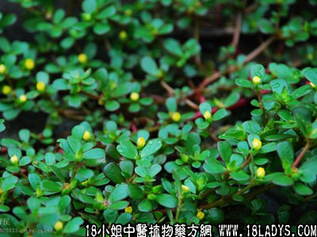

铁色金(中药材植物名:老鼠耳)(植物科目:鼠李科)

别名：乌口枣、乌龙根。
植物名：老鼠耳。
生长环境：本品为扳援灌木。在山地的草丛或荒丛间或河岸上生长，扳援它种植物体上。
分布：我国南部地区，广东各地均有，越南亦有。
入药部分：根。
采集期：全年。
自采地点：山岗。
性味：性平、味甘淡。
功能：祛瘀、止咳除痰。
主治、用量和用法：1、肺痨咳嗽：干根1～2两，清水煎服，或加猪瘦肉同煎；2、伤症咳血，配伍用；3、肥燥咳：干根1～2两，清水煎服，或加猪瘦肉同煎；4、筋骨痛：用法同上。
验方：（治肺痨方）1、铁色金6两、穿破石6钱、甘草3钱、清水15碗，煎成2碗，分2次服。症状消失后继用下方：铁色金1两、穿破石6钱、甘草3钱、猪瘦肉2两、清水5碗，煎成1碗，服3剂，每日或隔日服1剂。
（方解）本方有数十年历史，现已制为成药，有铁破汤丸，及铁破汤糖浆等。铁色金清肺热，穿破石活血行气，甘草解毒和中，为行气活血解毒理肺之剂。
（方歌）1、铁色金治肺痨伤，六一权衡两数商，甘草三钱穿破六，亥辰水量煎瓯汤，前方医肺铁色金，瘦肉同煲更养阴，若有热潮休用肉，服汤三帖是南针。
参考资料：《广东中医》（58年第4期）介绍铁破汤治疗肺结核经验，其中有增城某医生治验40例，龙川人民医院门诊部的治验24例，均获显著成效。处方如下：铁色金2两、穿破石2两、当归3钱、北杏3钱、川贝3钱、瓜萎仁3钱、薏苡仁2钱、紫苑3钱、白芨4钱、阿胶3钱、半夏2钱，煎服，有效率为83.2%。
又某氏1958年7月介绍：以铁破汤治疗80例，经X光确诊的肺结核病，结果52例吸收好转，25例病灶消失愈合，仅有3例无效。其处方即意铁色金、穿破石两味草药为主。
《广东省中医锦方选集第一集》防城县江山乡某中医祖传治骨梗阻咽验方：铁色金1钱、千斤拔6钱、沙羌3钱、硝磺3钱、烧酒4两，共捶烂，煨热烫敷颈部，同时患者自行旋转颈部，作咽物状，一般烫敷1小时，其骨自下，治例无数，未有不愈者。如有红肿加昆麻叶3钱，另用马鞭草、淡竹叶各2钱，煎水含漱。